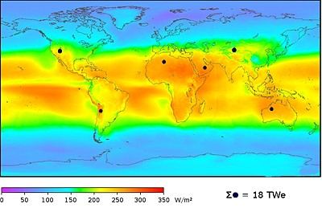
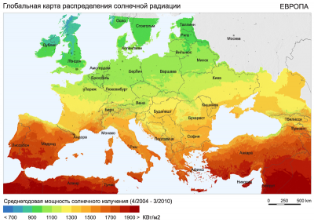
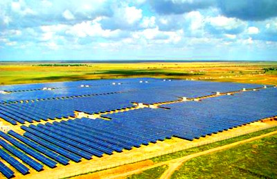
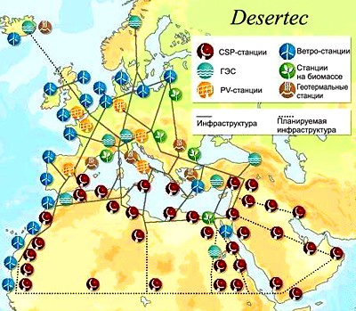
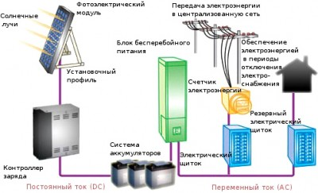
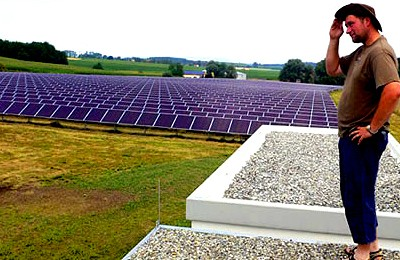

Перспективы развития гелиоэнергетики

Солнечная энергетика — это один из новых видов добычи энергии, основанных на возобновляемых источниках, в частности, на энергии Солнца. Основная цель состоит в преобразовании солнечного излучения в другие технологические виды энергии, используемые человеком для своих нужд. Этот вид энергии неисчерпаем и может рассматриваться потенциально как энергоресурс, способный перевернуть современные представления об энергообеспечении и полностью удовлетворить потребности человечества.

Средние показатели солнечного излучения с 1991 по 1993 год, учитывая облачность и пасмурные дни
Воплощение оптимистических прогнозов в реальность во многом связано с уровнем технологического развития. В настоящий момент существует технологическая возможность извлечения из солнечного света только незначительной частиэнергии, но даже этот объем уже является существенным для европейской энергетической инфраструктуры, где возобновляемым источникам, включая солнечные электростанции, отводится не менее 20% уже к 2020 году.
Мировая солнечная энергетика развивается высокими темпами, солнечные электростанции становятся частью энергетической инфраструктуры, стремительный рост количества и общей мощности электростанций, работающих на гелиосырье, предполагает также рост влияния солнечных технологий на экономику. Прежде всего, в ближайшие десятилетия солнечная энергетика станет стимулом для экономического развития экваториальных стран, обладающих максимальным «солнечным» ресурсом.
На сегодняшний деньнезависимо развивается несколько технологических направлений, одним из любопытных решений являются планы по строительству солнечных электростанций на орбите Земли. На первый взгляд такие проекты кажутся утопическими, если не учитывать, что уже анонсировано строительство пяти орбитальных электростанций.
Технологии по получению солнечной энергииПо данным Информационного энергетического агентства, с 1990 года по 2007 год потребление электроэнергии увеличилось на 40%, за следующие 25 лет прогнозируется увеличение потребления еще на 50%. Современные технологии жизнеобеспечения требуют все больше энергии, в качестве энергоресурса рассматривается любой эффективный энергоисточник, безусловно, солнце в списке возможных энергетических источников занимает одну из первых позиций.
В настоящий момент существуют две гелиотехнологии, которые могут претендовать на развитие в будущем. Одна основана на извлечении тока в результате фотоэлектрического эффекта (photovoltaic, PV). Вторая состоит в преобразовании тепловой энергии солнца (concentrated solar power, CSP), эта технология основана на нагреве теплоносителя от концентрированного солнечного луча.
Фотоэлектрический эффектОбщая идея преобразования света в электрический ток состоит в следующем — на полупроводниковую пластину падает поток фотонов, то есть свет, в результате поглощения фотонов атомами поверхностного слоя полупроводника электроны «выпрыгивают» с последних орбит атома на соседний слой проводимости, где пучок электронов образует электрический ток. Техническая сложность эффективного применения данного эффекта связана со сложностью преобразования всего солнечного спектра, то есть с использованием мультичастотных методов, так как определенный полупроводник улавливает фотоны только определенной частоты и не более. Современные фотопреобразователи рассчитаны на незначительную часть видимого солнечного спектра, КПД промышленных фотоэлементов не превышает 7-15%. Этого чрезвычайно мало, чтобыудовлетворить современные потребности в электроэнергии.
Для производства солнечных панелей используют полупроводниковый кремний высокой очистки, производство которого освоено во многих странах мира, что увеличивает технологическую адаптацию технологии. Фотовольтаические электростанции (PV-станции) на базе фотоэлементов монтируются по модульному принципу и могут наращиваться в зависимости от потребностей. Высокая стоимость панелей компенсируется простотой установки и обслуживания, как правило, мощные солнечные электростанции требуют минимум обслуживающего персонала. Срок эксплуатации солнечных батарей превышает 25 лет. В мире насчитывается несколько крупнейших фотовольтаических солнечных электростанций, которые имеют превосходные показатели эффективности и показывают стабильную работу с минимальным техническим обслуживанием.
На сегодняшний день стоимость солнечных батарей составляет 1,6-4$/Вт, в некоторых случаях может достигать $10 за Вт мощности, включая установку. При высокой стоимости панелей самые эффективные солнечные установки не в состоянии производить электрическую энергию дешевле 0,12$ кВт*ч, что в несколько раз превышает стоимость электроэнергии, полученной с использованием традиционного сырья. Чем севернее установлена солнечная установка, чем хуже погодные условия, тем выше себестоимость солнечной энергии.
Эффективность солнечной панели зависит от многих условий — её положения по отношению к солнцу, солнечные батареи резко снижают свою эффективность при перегреве, дают меньшее количество электроэнергии в пасмурную и облачную погоду.
Основные усилия производителей направлены на повышение эффективности, снижение стоимостии создание универсальной панели, которая способна воспринимать широкую областьсолнечного спектра с высоким КПД. К новейшим моделям, которые будут скоро доступны в продаже, можно отнести тонкопленочные солнечные батареи Nanosolar, по заявлениям производителя они будут иметь быстрый срок окупаемости, а также голографические солнечные панели Prism Solar Technologies, которые позволяют улавливать солнечный свет в статическом состоянии при любом положении солнца, не снижая эффективности. Производители Prism Solar уже в ближайшем будущем обещают, что их солнечные панели не будут превышать стоимость в 1,5 $/Вт.
Гелиотермальная технологияCSP-электростанции преобразуют концентрированное солнечное излучение в тепловую энергию, которая в дальнейшем используется для получения электроэнергии. Большей частью оборудование, используемое на электростанциях CSP-типа, является частью обычной ТЭС. Общая концепция этой технологии состоит в нагреве теплоносителя — воды, масла, соляного раствора, с помощью концентрированного солнечного света, полученного посредством сфокусированных зеркал-гелиостатов. Спомощью теплоносителя, нагретого до температуры фазового перехода, получаютводяной пар, который запускает паровую турбину, вырабатывающую электрический ток. Существуют два вида электростанций этого типа: башенного и параболического.

Гелиотермальная
солнечная электростанция башенного типа в Испании, тысячи зеркал
направляют концентрированный солнечный свет на бетонную башню с
теплоносителем
Гелиотермальная технология является экономически-эффективной по сравнению с фотовольтаическими солнечными электростанциями, при этом достигаемая эффективность составляет не менее 50%, с учетом, что такой тип солнечных электростанций устанавливается только в экваториальной зоне, характерной большим объемом солнечной энергии. Количество вырабатываемой энергии гелиотермальными электростанциями, установленными в пустынях, намного выше, чем мощность фотовольтаических солнечных электростанций. В период с 1984 по 1991 год в пустыне Мохаве (США) было построено девять гелиотермальных электростанций с общей мощностью 354МВт, это был первый успех и прорыв солнечной энергетики в мировую энергетическую систему.
Стоит отметить, что гелиотермальная технология является биологически опасной для людей, находящихся в поле мощного концентрированного солнечного луча, поэтому применяется большей частью на промышленных электростанциях.
Орбитальная солнечная электростанция как альтернатива земной энергетикеЗемная атмосфера в солнечный день задерживает более четверти мощного солнечного излучения. Возможность использования солнечной энергии вне зависимости от погодных условий и времени суток давно привлекает к себе внимание, поэтому строительство электростанции на орбите Земли обсуждается учеными с прошлого столетия. Высокая стоимость космической транспортировки не предполагала развитие орбитальных энергетических технологий, но, возможно, резкое сокращение ископаемых ресурсов заставило пересмотреть подходы. На сегодняшний день анонсировано строительство пяти электростанций на орбите Земли: проекта Solarbird (Митсубиши), орбитальной электростанции Пентагона, японского проекта Space Solar Power Systems, проекта Pacific Gas and Electric Company для штата Калифорния, а также проекта американской космической компании EADS Astrium.
Если преобразование солнечной энергии во многом уже не вызывает технических сложностей, то передача электроэнергии на дальние расстояния возможна только по высоковольтным линиям. Данная технология неприемлема для космоса, наиболее перспективными методами передачи считаются лазерное и радиоизлучение, которые имеют высокую биологическую опасность.Поэтому орбитальныепроекты вызывают значительные опасения, прежде всего, связанные с проблемой безопасной передачи электроэнергии на Землю. С другой стороны, очевидно, что орбитальные электростанции будут вырабатывать дорогую электроэнергию, которая, скорее всего, будет реализовываться «орбитальным» потребителям и не будет включена в земную энергетическую инфраструктуру. Открытие солнечных электростанций на орбите вызывает как живой интерес, так и значительные опасения, связанные с безопасностью.

По оценкам NASA, на орбите Земли находится 15899 объектов
Эксперименты с преобразованием солнечной энергии в электричество в промышленных объемах начались с 1984 года, но основной пик роста количества солнечных электростанций пришелся на последнее десятилетие. Коммерческие результаты первых солнечных электростанций были впечатляющими настолько, что это способствовало массовому развитию новых проектов. В настоящий момент лидером в производстве солнечной энергии является совсем не солнечная страна — Германия, совокупная мощность солнечных электростанций которой составляет на 2011 год 19ГВт. Основной прирост немецких солнечных электростанций пришелся на 2010 год и составил 10ГВт.

Глобальная
карта солнечного излучения, CSP-станции эффективны в «красной» зоне,
PV-станции строятся в зоне со средним излучением 900-1500 кВт/м2
{kind=link}
Солнечная энергетика — это вполне доступный способ для обеспечения человечества необходимым энергоресурсом. Но все же её потенциальные возможности пока малы, чтобы заменить полностью ископаемое топливо, во всем мире по расчетам понадобиться: 50 тыс. солнечных электростанций по 300 МВт, а также 3,8 млн. ветрогенераторов по 5МВт.По данным Интернационального энергетического агентства к 2050 году солнечная энергия сможет обеспечить только 20-25% потребностей человечества.
Тем не менее, первый значительный опыт строительства солнечных электростанций в 2008-2009 годах был настолько удачным, что стали анонсироваться новые проекты с гигантской мощностью, сравнимой с мощностью АЭС. Самыми крупными энергопотребителями в мире являются: США — 21%, Китай — 16%, Индия — 6%, Россия — 5%. США и Китай в последние годы старательно наращивают свой «солнечно-энергетический» потенциал, о строительстве гигантской солнечной электростанции заявила и Индия.
Функционирующие проектыДля размещения разного типа солнечных электростанций характерна зональность, которая обусловлена экономической эффективностью и эксплуатационными качествами: гелиотермальные CSP-станции строятся в экваториальной зоне (в пределах 38 широты), фотовольтаические PV-станции — в северных районах (в пределах 55 широты).
CSP-станция Gemosolar, Андалусия, Испания, 20МВт. Первый европейский опыт по строительству солнечных электростанций был получен в Испании. Значительный опыт в производстве солнечной энергии испанские компании получили в пустыне Мохаве в США, но опыт Испании, находящейся в зоне интенсивного солнечного излучения 1600-2000 кВт/м2,предопределил будущее европейской солнечной энергетики. Одной из первых гелиотермальных электростанций башенного типа в Европе была станция Gemosolar.
Эта электростанция основана на работе 2650 зеркал-гелиостатов, размещенных на территории в 185 га и фокусирующих солнечное излучение на бетонную башню с установкой расплавленной соли. В башне разогревают расплавленную соль до 9000С, которую хранят в подземных хранилищах для использования в ночное время. Эта станция позволяет сберечь Испании 30000 тонн углекислого газа по Киотскому протоколу.

CSP-станция Gemosolar, Андалусия, Испания, 20МВт
CSP-станция PS10, Андалусия, Испания, 11-300МВт. Гелиотермальная электростанция PS10 была построена крупнейшей энергетической компанией Испании Abengoa Solar и ее дочерним предприятием Solucar Energia. Высота термальной башни составляет 115м. Башня размещена в фокусе 624 зеркал с площадью каждого в 120м2, первоначальная мощность 11МВт. Эта станция к 2016 году станет одной из крупнейших в Европе, её суммарная мощность будет равна 300МВт. Такая станция вполне может покрыть затраты электроэнергии города Севилья.
PV-станция SolarParkOlmedilla, Омелдилла, Испания, 60МВт. Электростанция фотоэлектрического типа работает на основе 26 тыс. солнечных панелей, станция запущена в эксплуатацию в 2008 году. В момент запуска в эксплуатацию была самой крупной солнечной электростанцией в мире, работающей на фотоэлементах.

PV-станция Solar Park Olmedilla, Омелдилла, Испания, 60МВт
PV-станция «Омао Солар», ActivSolar, Украина, 80МВт. Компания Activ Solar (Австрия) реализовывает проект строительства крупной солнечной электростанции в Сакском районе Крыма. Проект реализовывается поэтапно, в результате каждого этапа будет подключаться 20 МВт. Общая площадь электростанции составляет 160 га, которые займут 360 тыс. солнечных модулей. В настоящий момент введено в эксплуатацию 7,5МВт. Станция будет производить100 тысяч МВт*часов/год, необходимых для обеспечения 20 000 домов, это предотвратит выбросы 80 000 тонн углекислого газа.

PV-станция «Омао Солар», Activ Solar, Украина, 80МВт
CSP-станция Acciona Nevada Solar One, Невада, США, 60 МВт. Станция расположена в пустыне Мохаве в штате Невада, представляет собой гелиотермальную установку, которая дополнена газовым генератором, подключающимся в ночное время. Станция успешно обеспечивает электроэнергией 16 000 домов. Это одна из крупнейших солнечных электростанций в мире. Реализовывала проект испанская компания Acciona, которая специализируется на строительстве и эксплуатации гелиотермальных станций параболического типа.

Параболические солнечные коллекторы Nevada Solar One
PV-станция Sarnia, Онтарио, Канада, 97МВт. В 2010 году эта станция была крупнейшей фотовольтаической станцией мира. «Зеленую» энергию этой станции продают по цене $0,443 кВт*ч. Станцию построила компания First Solar, которая заключила 20-летний контракт на поставку энергии государству. Станция занимает 380 га.
| Солнечные PV-электростанции, запущенные в эксплуатацию (более 50МВт) | ||||
|---|---|---|---|---|
| Солнечные электростанции | Страна | Номинальная мощность, МВт | Тип, КПД | Примечание |
| SolarparkSenftenberg | Германия | 166 | PV | 2009-2011 |
| LieberosePhotovoltaicPark | Германия | 71,8 | PV | |
| Montalto di Castro Photovoltaic Power Station | Италия | 84,2 | PV | 2009-2010 |
| FinsterwaldeSolarPark | Германия | 81 | PV | 2009-2010 |
| RovigoPhotovoltaicPowerPlant | Италия | 70 | PV | 2010 |
| OlmedillaPhotovoltaicPark | Италия | 60 | PV/0,16 | 2008 |
| StrasskirchenSolarPark | Германия | 57 | PV/0,12 | |
| TutowSolarPark | Германия | 52 | PV | 2009-2011 |
После удачных проектов 2009-2010 года стали анонсироваться крупные проекты строительства солнечных электростанций по всему миру. Впечатляют масштабы строительства и размах. Действительно, солнечная энергетика уже набирает свои силы и способна перевернуть все ранее сложившиеся представления об эффективном энергообеспечении.
PV-станция Масдар-Сити, ОАЭ, 100МВт. Арабские Эмираты вкладывают деньги не только в нефтяные технологии. Объявлено о строительстве города будущего Масдар-Сити, который будет полностью обеспечиваться за счет «зеленых технологий». Огромная PV-станция будет размещена на крыше города.

Концепция «зеленого» города Масдар-Сити, ОАЭ
CSP-станция SunPower, Калифорния, США, 250МВт. Крупная гелиотермальная электростанция строится и для обеспечения «зеленой» энергией штата Калифорния. Основным покупателем электроэнергии будет компания PG&E. Выработка энергии начнется также в 2011 году.
PV-станция BhaskarSiliconLtd., Западная Бенгалия, Индия, 250МВт. Этот комплекс представляет собой производство по выпуску поликристаллического кремния, а также крупнейшую электростанцию, которая запускается в эксплуатацию в 2011 году. Стоимость проекта составляет $1,27 млрд.
CSP-станция Solana, Аризона, США, 280МВт. Гелиотермальная станция башенного типа начнет свою работу уже в 2011 году. Это один из самых масштабных проектов, которые практически одновременно запускаются в США. Строительством объекта занимается испанская компания AbengoaSolar, которая известна своими разработками в области солнечной энергетики. Проект предусматривает сохранение тепловой энергии для функционирования электростанции в ночное время в подземных хранилищах. Обслуживающий персонал станции состоит из 85 человек.
CSP-станция Ivanpah, Флорида, США, 392МВт. Станция строится в пустыне Мохаве, будет состоять из трех гелиостатических блоков зеркал, направляющих концентрированную солнечнуюэнергию на бойлеры, размещенные внутри башен высотой 137 метров. Ввод в эксплуатацию гелиотермальной электростанции Ivanpah запланирован на 2016 год, первые блоки должны быть запущены в эксплуатацию уже в 2011 году. Основные инвесторы — энергетическая компания NRG Energy Inc. и «зеленое» подразделение Google Green Business Operations, основной подрядчик Bright Source Power. Эта электростанция должна обеспечить энергией 140 000 домов, обслуживающий персонал составляет 86 человек. Планируется довести мощность электростанции до 500МВт.
PV-станция Optisolar, округ Обис-по, США, 550МВт. Для строительства этой электростанции используется новейшая тонкопленочная технология производства фотоэлектрических элементов. Основным покупателем «зеленой» электроэнергии будет энергетическая компания PG&E. Планируемый запуск в эксплуатацию в 2011 году.
CSP-станция BrightSource, Невада, США, 1200МВт. Строительство крупной гелиотермальной электростанции ведется компанией BrightSource в штате Невада, вблизи Лас-Вегаса. Это целый комплекс гелиотермальных электростанций вокруг Лас-Вегаса с гигантской мощностью, которая позволит обеспечить электроэнергией почти 1 млн. домов. Безусловно, компания BrightSource оценила коммерческую эффективность электростанции Acciona Nevada Solar One, расположенную вблизи Лас-Вегаса — крупнейшего энергопотребителя в США. Запуск в эксплуатацию планируется осуществить в 2012 году.
PV&CSP-станция FirstSolar в Ордос, Китай, 2000МВт. Станция строится крупнейшей американской компанией FirstSolar, окончательный ввод в эксплуатацию планируется в 2020 году. Выбор места строительства рассчитан на повышенное энергопотребление в стране с высокой плотностью энергоемких производств. Проект разбит на несколько этапов, первой введут в эксплуатацию небольшую электростанцию PV-типа на 30МВт. Гелиотермальную часть станции будет строить китайская компания CgnSedc. По состоянию на 2010 года суммарная мощность солнечных электростанций в Китае не превышала 350МВт, к 2020 году запланированная совокупная мощность будет составлять уже 10ГВт.
Integrated Solar City, Гуджарат, Индия, 5000МВт. Этот проект является одним из самых крупных «солнечных» проектов на планете. Общая его стоимость составит $475 млн. Представляет собой он целый город, что и отражено в названии. Инвестиционную поддержку оказывает Фонд Клинтона. На сегодняшний день неясен тип электростанции, но, скорее всего, станция будет гибридного типа. Отметим, что стандартная мощность АЭС составляет 1000МВт, а, соответственно, солнечная электростанция в 5 раз превышает мощности крупнейших АЭС. В анонсе прозвучало, что стоимость электроэнергии будет на 70% ниже обычной.
CSP-станции Desertec, Сахара, Африка, Персидский залив, 110ГВт. Общая стоимость этого проекта составляет $400 млрд., рассчитан он на 40 лет. Основным потребителем энергии будет Европа, трансконтинентальные высоковольтные линии будут проложены по морскому трубопроводу Transgreen. Для реализации проекта объединились энергетические и финансовые гиганты: Deutsche Bank, RWE, E.On, Siemens. Строительство солнечных электростанций начнется в 2016 году, запуск первых проектных мощностей запланирован на 2016 год. Этот проект стартует в рамках программы использования возобновляемых источников в Европе, именно благодаря Desertec правительство ЕС хочет достигнуть использования 20%-объема энергии из возобновляемых источников к 2020 году.

Инфраструктура проекта Desertec
Проект Desertec ориентирован на все виды возобновляемой энергии, планируется строительство или объединение электростанций нескольких типов: CSP-станций в экваториальной зоне, ветроэлектростанций на берегу Атлантического океана, нескольких гидроэлектростанций, PV-станций на территории Европы, а также нескольких геотермальных, приливных станций и электростанций, работающих на биомассе. Desertec дополнит европейскую энергетическую инфраструктуру.
Российская солнечная энергетика. ПерспективыРоссия относится к крупнейшим энергетическим потребителям в мире, для которых актуально развитие собственного полнофункционального энергетического комплекса, начиная с добычи сырья, заканчивая эффективными схемами реализации. Наличие дешевых ископаемых энергетических ресурсов, а также северное расположение страны в области с солнечным излучением ниже 900-1000 КВт/м2 снижает коммерческую эффективность развития инфраструктуры солнечной энергетики в РФ. Солнечная энергетика в России в ближайшее время будет развиваться за счет малоформатных солнечных электростанций индивидуального частного или промышленного использования.
При строительстве солнечных электростанций на первый план выходит экономическая целесообразность, ведь основные потребители находятся на севере страны и пользуются дешевой энергией на базе ископаемого топлива. Дорогая электроэнергия — это излишняя нагрузка на бюджет страны. На сегодняшний день продвижение систем индивидуального энергообеспечения с продажей излишков в центральную энергосеть является более экономически-обоснованным, чем строительство коммерческих электростанций в южной области России.
Тем не менее, энергетическая инфраструктура России должна развиваться в рамках общемировых тенденций, поэтому в южных областях России необходимо строительство солнечных электростанций хотя бы в качестве полигонов для научных исследований. Для этих целей в 2011 году «Роснано» и «Ренова» анонсировали строительство солнечной электростанции в Кисловодске с суммарной мощностью 12,5МВт.
Развитие солнечных электростанций в России можно рассмотреть в контексте мировых тенденций, в частности в контексте поставки «солнечной» электроэнергии в центральную энергосистему индивидуальными поставщиками. Анализ опыта Германии, являющейся лидером в области солнечной энергетики, обращает внимание на следующие факты. Немецкие государственные дотации в солнечную энергетику были реализованы за счет введения общего налога на энергоресурсы, составляющего 0,035 евро за 1 кВт*ч. После стремительного роста инфраструктуры в 2010 году в Германии было принято решение о снижении субсидий. Также ранее реализован законодательный инструмент поддержки — все производители солнечной энергии имеют гарантированный сбыт электроэнергии в центральную энергосистему по цене «зеленого тарифа», который составляет 0,5 евро за 1 кВт*ч.Стремительный рост солнечной энергетики создает значительную нагрузку на электросети, особенно, в рамках светового дня, когда снижается общее энергопотребление, а растет выработка «солнечной» электроэнергии. Для компенсации этого эффекта возле солнечных электростанций необходимо строить аккумуляторные подстанции для хранения излишков электроэнергии, которые сократят неоправданную нагрузку на централизованную сеть.
Перспективы развития российской «солнечной» инфраструктуры, прежде всего, состоят в развитии научно-производственной базы в рамках продуктов, выпускаемых для обеспечения нужд солнечной энергетики. Ориентируясь на опыт Германии, государственные дотации в отрасль можно обеспечить за счет введения налога на энергопотребление.
Концепция сетевого энергообеспечения от индивидуальных поставщиков солнечной энергии. Энергетические GRID-системыСетевое энергоснабжение за счет малоформатных электростанций активно продвигается в Израиле. Идея израильских ученых базируется на простых логических доводах, что в каждой семье энергопотребление носит нерегулярный характер, поэтому могут быть излишки, а также недостаток энергии, энергию можно не только получать из центральных сетей, но и отдавать излишки.В Израиле 95% многоквартирных домов оснащены солнечными установками, поэтому для реализации идеи необходимо только создать необходимую инфраструктуру.

Функциональная схема индивидуального поставщика энергии в центральную энергосеть
{kind=link}
Во всех странах поддержка правительством стран «зеленых» технологий энергообеспечения проводится с помощьюгосударственных программ «зеленого тарифа», что предполагает гарантированную продажу электроэнергии, полученной из возобновляемых источников в центральную энергосеть. Как правило, «зеленый тариф» в 1,2-2 раза превышает стоимость оптового тарифа на электроэнергию. В развитых странах этот тариф колеблется в рамках $0,40-0,75 за 1 кВт*ч.
За последние годы в Испании и Германии частные владельцы мини-электростанций начали вносить значительный вклад в ранее монопольную энергосистему. Солнечные электростанции становятся выгодным бизнесом, который способен приносить стабильный доход индивидуальным предпринимателям.Развитие энергетической системы по модной GRID-технологии является одним из интересных направлений развития российской солнечной энергетики, в которую будут, таким образом, привлечены индивидуальные инвестиции. Подобный подход позволит оптимизировать центральную энергосистему и сократить степень монополизации энергорынка.

Солнечная ферма Хайнера Гартнера, Германия Способна ли солнечная энергетика на прорыв?
Совокупная мощность солнечных электростанций в мире в последующие годы будет стремительно наращиваться. В «солнечную» гонку будут включены все страны, которые имеют достаточное количество солнечного излучения для эффективного производства электроэнергии. Коммерческая эффективность солнечной энергии с развитием «солнечных» технологий и повышением эффективности преобразования солнечного света будет только увеличиваться.
Анонсирование европейского проекта Desertec и создание новой европейской энергетической инфраструктуры на базе электрических станций, работающих на возобновляемом топливе, является основным прорывом солнечной энергетики и энергетики на базе возобновляемых источников. Desertec — это яркий пример того, что мировая общественность признала, что солнечная энергетика может быть эффективной частью мировой энергетической инфраструктуры.
Фактический прорыв в солнечной энергетике уже произошел, но полное замещение ископаемых энергоресурсов возможно только при экспотенциальном технологическом развитии.
К сожалению, Россия имеет весьма скромный потенциал развития в рамках использования солнечного излучения, тем не менее, может внести существенную лепту за счет сырьевой базы, производственных мощностей и передовых научных технологий. Рост солнечной энергетики будет пропорционален росту «солнечных» технологий и производств, которые смогут обеспечить формирующийся рынок новым качественным продуктом. На роль мощной производственной базы может вполне претендовать Россия, которая имеет необходимый научно-производственный потенциал.